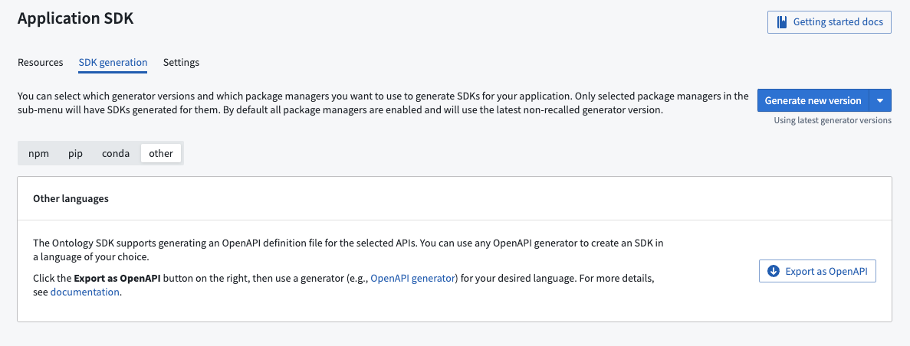

The Developer Console has built-in Java, Python, and TypeScript support for code generation using both pip and Conda but is not limited to these languages. Developer Console also supports exporting APIs in the industry-standard OpenAPI format â. You can use open source code generators to generate a client based on the downloaded OpenAPI spec in almost any language.
Navigate to the Application API page in the Developer Console application and open the SDK generation tab. Then, choose Other languages and select Export as OpenAPI.

:::callout{theme="warning"} As the exported file will include the name and the description of the resources included in the Developer Console application, ensure these fields do not contain sensitive information. :::
Once the OpenAPI file has been exported, you can generate a client and server using an open source generator. A list of OpenAPI generators can be found on the OpenAPI generator web site â.